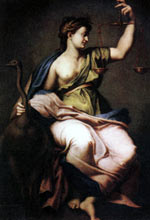

Феміда, в античній міфотворчості давньогрецька богиня правосуддя і законного порядку, титаніди, упорядниця і охоронниця моральних основ і всього ладу життя, дочка Урана і Геї, після богині Метис друга законна дружина Зевса, мати ор і мойр (Гесіод 135 , 901-906).
Стародавні греки називали богиню різними іменами, наприклад Теміда, Теміс. Богиня Феміда була матір'ю численного потомства. Її дочками були богині долі - Мойри і богині пір року - ори або гори.
За однією з версій міфу, Феміда є матір'ю Прометея. Володіючи даром пророцтва, Феміда відкриває Прометею таємницю, що одруження Зевса на Океанида Фетиде призведе до народження сина, який скине верховного бога-громовержця. Її пророкування засмутило шлюб Фетіди з Зевсом.
У міфі про Прометея розповідається, що герой відкрив цю таємницю тільки після тисячолітніх мук, на які прирік його Зевс (Есхіл, Прометей, 18). Від матері Геї Феміда отримала Дельфійський оракул, який передала своїй сестрі Фебе, та віддала це прорицалище своєму онукові Аполлону (Есхіл, Евменіди, 2-8). За повідомленням Овідія вона ж попередила Атланта, що одного разу син Зевса викраде яблука у його дочок Гесперид. За Гомеру вона виконує обов'язки глашатая верховного бога Зевса на Олімпі, скликає богів на збори, головує на бенкетах небожителів.
У значенні радниці верховного олімпійського бога, що сидить біля його трону, вона нерідко виступає в послегесіодовскіх поетичних творах. Завдяки турботам Феміди підтримується зовнішній порядок як в житті богів на Олімпі, так і серед людей на землі, причому саме ім'я богині вживається також для позначення абстрактного поняття правових норм (????????), що регулюють людське життя.
Під її ж заступництвом знаходяться всі шукають гостинності, пригноблені, потерпілі несправедливість. У творах мистецтва Феміда зображувалася з пов'язкою (символом неупередженості) на очах, з мечем, іноді з рогом достатку і вагами в руках. В Олімпії жителі Стародавньої Греції ставили жертовники Зевсу, Геї та Феміді поруч, що показує, наскільки шанували вони цю богиню правопорядку.